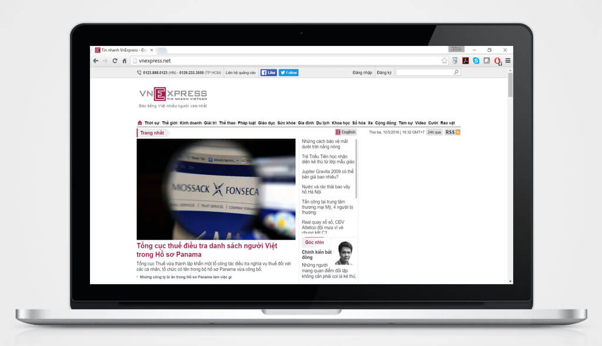
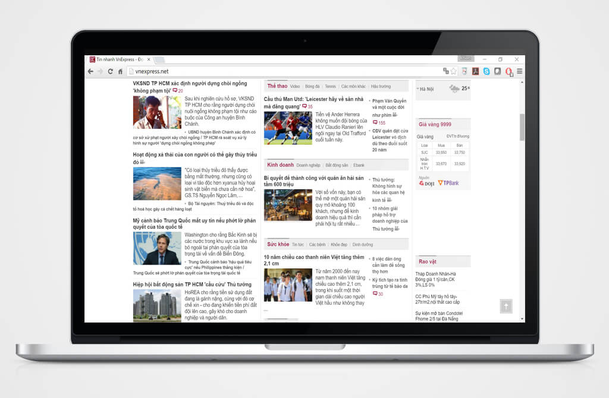
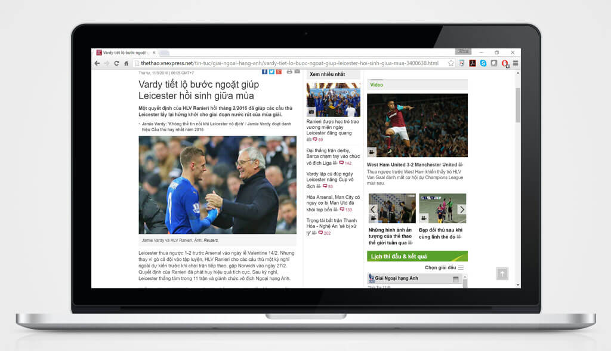
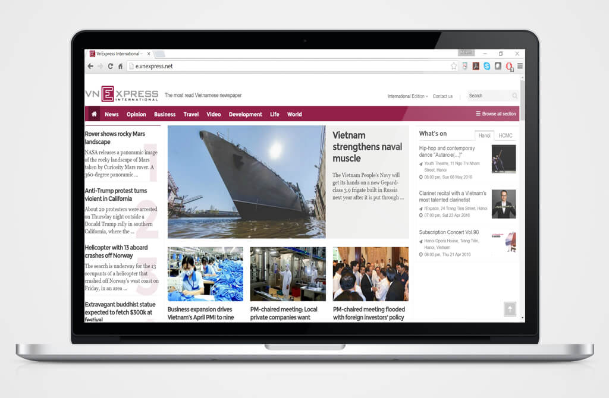
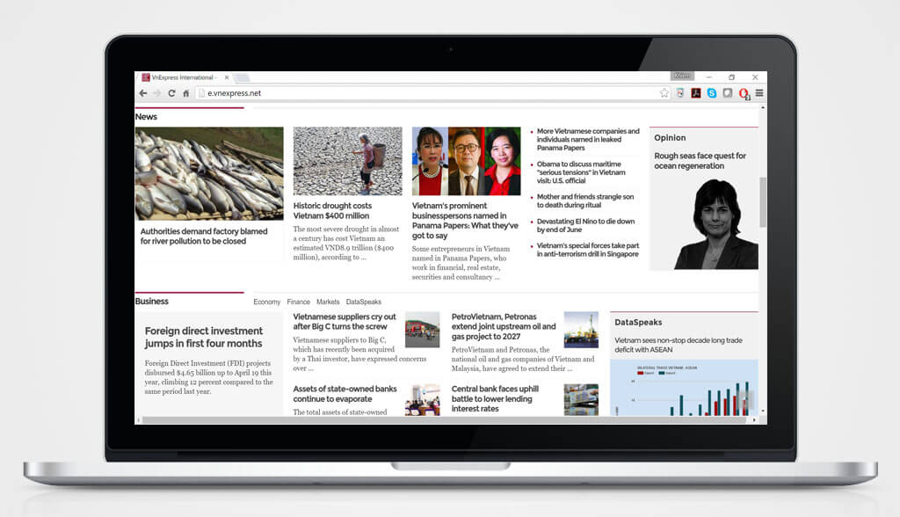
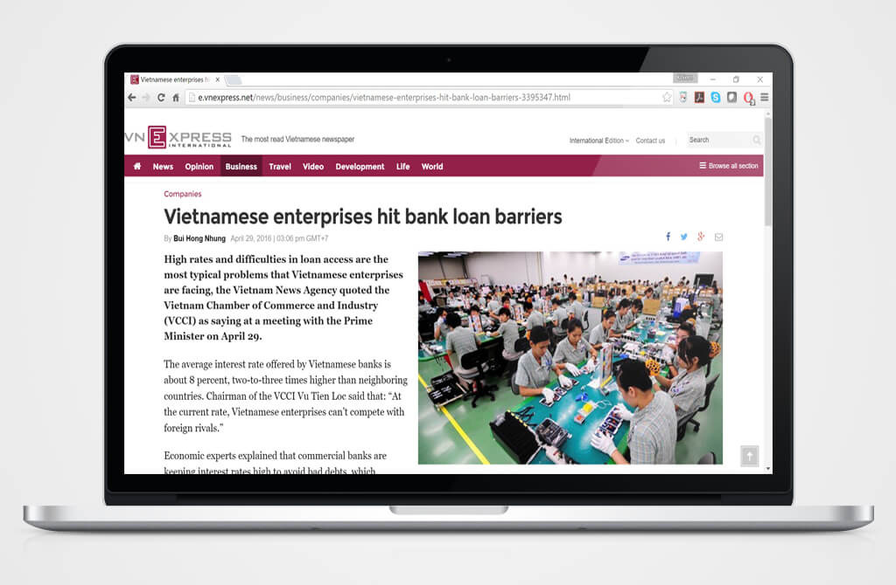
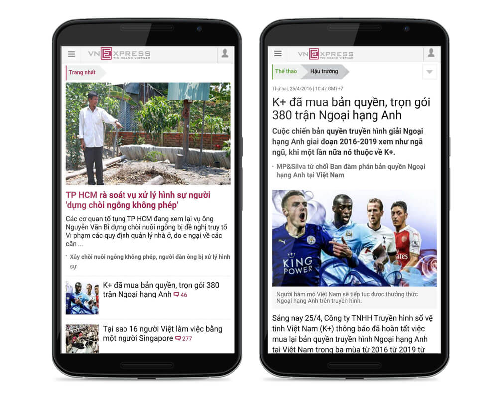
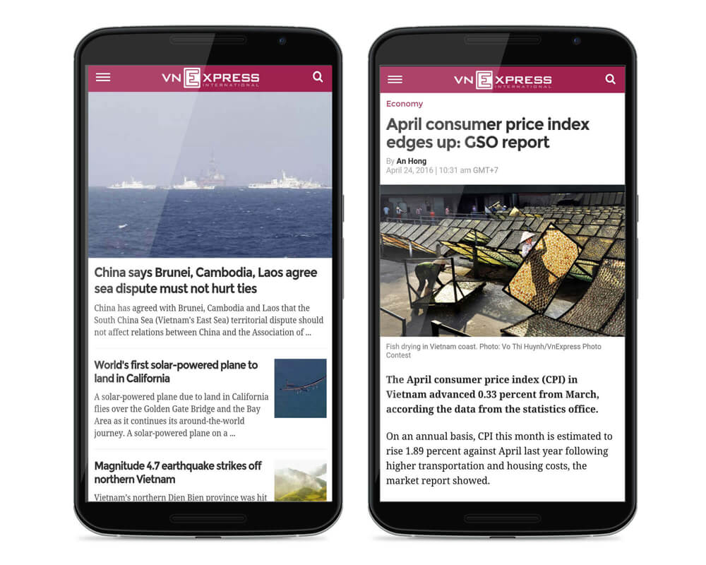

My full name is Khiem Duy Nguyen, a software salesman turned UX Designer and Data Enthusiast - I'm Vietnamese by ethnicity, but have spent my life living in Moscow (Russia), London (England), and now the beautiful Seattle of the Evergreen State, Washington USA.
Currently pursuing a M.S. in Information Management at the University of Washington - specializing in UX Design, Data Science & Analytics. I love to explore, observe, analyze, sketch, and prototype new ideas where better experiences can be developed to solve common user problems.
To develop a career in UX Design with an organization that is 100% dedicated to building meaningful products around a "data-informed & user-driven" mentality. My other dreams include conquering Mt. Everest and building a technology-training school for orphanages in Vietnam.

Pinky Swear is an Android mobile application that strives to offer users a novel and fun way to stay productive. Initially developed as a side project, the primary idea was to allow a user (i.e. User A) make a "promise" to another randomly matched user (i.e. User B), who in turn will also have to make a promise to User A.
A specific timeframe of 24 hours will be set for both users, and throughout the course, User A and B will have the chance to communicate with each another via a chat messenging tool - giving them a chance to encourage one another to fulfill his/her promise.
The catch? Once User A fulfills his/her promise in action, only User B can check it off on the app - thereby giving the app a collaborative nature overall. In a way, you can refer to Pinky Swear as a "collaborative to-do-list" app.

Quantitative user research was conducted in the form of a Survey. A total of 50 people were randomly chosen from friend and family circles, as well as the public. Below is a summary analysis of the process, along with important questions asked, associated responses, and data findings.

From the survey, 3 important numbers that support the concept behind Pinky Swear receive the most attention:

From the indications above, the last finding proves to be particularly important as it revolves around a core feature of Pinky Swear - to make promises with one another and engage in a collaborative process in order to encourage each other's fulfillment of the respective promises - thereby illustrating a big opportunity.
Through the research, it is also interesting to find that our largest target audience consists of females aged between 18 and 49, and those who typically possess 1-4 actions they have to complete as well as be reminded of per day.
Early Sketches were followed after some brainstorming sessions.

Based on the user research, feedback, and early sketches - a high-fidelity User Flow and a set of Wireframes were created for Usability Testing purposes.


The following are important design decisions made:
Using the wireframes above, an Interactive Prototype was created to test on 10 users. Their feedback was then incorporated into the next design iteration.
The following are key changes:


After roughly 4 months of design, development, as well as marketing efforts, the 1st version of Pinky Swear was released onto Google Play in June 2015. While the initial plan was to only build the app for fun, opportunities where Pinky Swear's current as well as potential features could be further developed were explored.
A 2nd round of usability testing was conducted using the functional app (5 participants), and below are key changes/additions:
Feedback from the usability test allowed us to release Pinky Swear V.2 in November 2015.
As of March 2016, the decision had been made to discontinue Pinky Swear's operation, due to a lack of market interest. With well over 500 downloads throughout its lifetime, this concluded our one year of experience with this very special project - one that had taught us a great lesson about the end-to-end cycle of agile product development. More importantly, we've given ourselves the chance to appreciate the significance of teamwork and collaboration as a component of success.
With Pinky Swear, I've personally had the opportunity to ship my first ever design as a UX professional. As such, the app will always maintain a very special spot in my heart. Thank you to everyone who has shown and continues to offer your support to Pinky Swear. This experience wouldn't have been possible without all of you. :)

Many people today find themselves with amazing tech ideas and all the motivation required to transform these ideas into meaningful products/applications, and yet they typically experience difficulties getting started. Why?
This occurence is normally due to such individuals' lack of certain skill sets or field knowledge (i.e. they can code but they cannot design). At the same time, many talented professionals may want to contribute their skills to tech-oriented projects that are interesting or meaningful to them, and yet they often find it challenging to discover these ideas as well as those who own them.

There exists a good number of websites today that specifically serve to connect individuals/organizations with freelancers who may be needed for certain projects. These resources, however, are typically designed as marketplaces rather than social networks. Hence, the majority of projects sourced via these sites are likely to be contract-based. Clients will simply aim to hire additional employees to get a job done. In turn, this approach limits the opportunity for passionate individuals who share a common interest to meet and collaborate.
Illustrated above are 5 popular "freelance marketplaces" commonly used by organizations and professionals today.
To offer a response to this market gap, Collab wants to provide a tool which can:

The ultimate objective? To build an application where projects/ideas receive the main spotlight, while owners and collaborators have a place where they can connect, collaborate, and build products that can change the world.
To better understand the target audience, a few Assumptions were made around these questions:

And to better understand the users' needs and challenges, qualitative 1-hour long Interviews were conducted with 5 interviewees. Below is a list of questions asked, and a brief insight into the interviewees' profiles:

From the interviews, 5 key conclusions were drawn:

Based on the interview results, the following documents were created as stepping stones to the visualization of potential features/experience designs for Collab:
Personas (2)

User Requirements (2)
User Scenarios (2)


A User Flow Diagram

An Information Architecture/Site Map

Based on overall research findings - early, quick and dirty Sketches were made to document, organize, and filter interesting ideas.

The best ideas were then iterated into clear Wireframes that come with a set of desired features.

A Usability Test was conducted via the "Think-Aloud Protocol" Method. The primary goal was to elicit user feedback in order to help refine Collab's overall interaction as well as interface design. Usability test tasks were designed to assess the accessibility and understandability of the end-to-end user flow for the app's major features.
A total of 5 users were recruited to help with the testing process. They were screened according to the following attributes:
Following the test's conduction, below is a list key findings recorded:


As the usability test has illustrated, two new features are to be implemented.

The wireframes are then transformed into High-Fidelity Designs with a proper color palette and iconography usage. Here's a snapshot of the Welcome Page (left), and a slideshow of the some design samples (right). Simply click the left-most area of the screen to advance to the next screen, and right-most to revisit the previous screen. If the screen slides up or down, it is an indication that it belongs to the same page as the previous or next screen, respectively. Note that this is not an interactive prototype.

In October 2015, I had the amazing opportunity to present Collab to a group of angel investors and entrepreneurs at the Seattle Startup Week event. Although I have no intention in pursuing the idea fully as a business, the feedback and advices given to me were more than invaluable.

If I ever plan to continue with this project, nonetheless, here are a few things which I would like to work on next:

Eating healthy is a challenge for a lot of students. For many, it is difficult to make time for nutritious meals in between classes and work. For others, a limited budget might be keeping them from actively choosing healthy food. This food culture enables a student body that prioritizes speed and convenience over health and food quality.
This project strives to gain a better understanding of the many barriers students face in making healthy food choices as they make their way around campus. Through various research methods, we want to learn the variety of behaviors that students exhibit towards healthy food options, and by doing so, our goal is to design an engaging solution that will help students access healthier, more informed, and wholesome food within the UW vicinity.
Three primary research methods were utilized throughout the research process, including Interviews, Surveys, and "Fly-On-The-Wall" Observations.

Affinity Diagram
After reviewing all of our interview and observation notes, as well as the survey response summary, we got together and produced an Affinity Diagram as a group. Using sticky notes, each person posted on the board comments, patterns, and information we gathered from the researches. We then sorted them into groups based on intuitive relationships. This allowed us to come up with five groups in accordance with these themes:

Summary of Findings
Among all of our research findings, we are particularly interested in the following:

User Characteristics/Design Question/Personas
Based on the researching findings presented above, we were able to define the following User Characteristics:
Within the context of these characteristics, we refined our Design Question, and accordingly came up with two primary Personas:
"How can we utilize PEER INFLUENCE to motivate UW students to eat more healthily while keeping up with a busy schedule?"


User Design Requirements
Lastly, these User Design Requirements are solidified. Each requirement should appropriately correlate with one or more of the findings:

Sketches
Early, quick and dirty Sketches were made to document, organize, and filter interesting ideas.

Wireframes
These early sketches were then transformed into a set of Wireframes with specific desired features. Below is a selected sample:

Usability Testing
Using the "Think-Aloud Protocol" Method, a usability test was conducted with a total number of 7 UW students. The test focused on the user’s ability to search, post and utilize other product features. Usability test tasks were designed to assess the accessibility and understandability of the end-to-end user flow for the app's major features.

Participants of the usability test were both UW undergraduate and graduate students interested in healthy eating on and around campus.
Concept-wise, the test revealed users' desire to see a focus on not only homemade meals/recipes, but also meals that they may discover from eating out at restaurants, bistros, cafes etc. In this regards, the ability to find, discover, and share healthy "menu items" was an important addition of which the usability test has provided.
On the other hand, below is a list of other key findings and changes made:
SOLUTIONS
SOLUTIONS
SOLUTIONS
SOLUTIONS
SOLUTIONS
SOLUTION
SOLUTION
The collected data from the usability test allowed us to make significant changes to our wireframes, which are then transformed into High-Fidelity Designs with a proper color palette and iconography usage.
Below is an interactive prototype that delineates the user onboarding process, as well as one of the primary workflows which Husky Yum strives to offer: Searching For a Healthy Homemade Recipe. Simply follow these steps:
Find saved recipes via these steps:
With a significant number of users expressing a desire to see a similar process for Healthy Menu Items found outside of the home kitchen, here's a another quick interactive prototype which effectively illustrates this flow:
One last important scenario that is equally important to the Husky Yum design concept is the creation of new recipes and/or menu items to be shared on the app. Here, we follow the steps for Posting a New Healthy Homemade Recipe as an example:
As part of our HCDE 518 class, we had the chance to present Husky Yum to our instructors and peers at the end of the quarter. In this respect, the feedback provided to us were definitely very valuable. As such, they will continue to serve as an important lesson throughout our career.
If I ever plan to continue with this project, nonetheless, here are a few things which I would like to work on next:

Joomla! is a free and open-source content management system (CMS) for publishing web content. It is built on a model–view–controller web application framework that can be used independently of the CMS.
As part of the product development roadmap, the Production Leadership Team has decided to execute a complete redesign project for the next version of the system, Joomla 3.5 (web & mobile).
Volunteers around the world were recruited for this project, and I was very fortunate to have obtained the role of UX Designer/Developer - responsible for driving the end-to-end UX Design process, from user research, low-fidelity wireframing, usability testing, to eventual high-fidelity graphic design.
At the same time, I was given the formidable opportunity to collaborate with other teams on redesigning/developing the two most visited Joomla domains - Joomla.org and Joomla.com - in an initiative to improve user sign up rates and branding.

Below is a slideshow of some design samples created for Joomla.org. Press the "Play" button, and simply click on the right-most area of the screen to see the next design. Click on the left-most area of the screen to revisit the previous design. Note that this is not an interactive prototype.
In March 2016, I left the Joomla project to pursue other academic/professional goals. Nonetheless, the lessons I've learnt from this experience will always be irreplaceable as I continue to advance on in my UX career. At the same time, the opportunity to have met and befriended some of the most wonderful and talented people around the world was truly an amazing gift.
If you consider yourself a web development ninja, or perhaps you simply want to learn more, check out Joomla! right now! You may even find ways to contribute and effectively become part of the Joomla family. :)

Amazon Web Services Internet of Things (AWS IoT) is a managed cloud platform that lets connected devices easily and securely interact with cloud applications and other devices. AWS IoT can support billions of devices and trillions of messages, and can process and route those messages to AWS endpoints and to other devices reliably and securely. With AWS IoT, applications can keep track of and communicate with all your devices, all the time, even when they aren’t connected. (Source: AWS IoT)
AWS IoT makes it easy to use AWS services like AWS Lambda, Amazon Kinesis, Amazon S3, Amazon Machine Learning, and Amazon DynamoDB to build IoT applications that gather, process, analyze and act on data generated by connected devices, without having to manage any infrastructure. (Source: AWS IoT)
In an initiative to improve usability for the AWS IoT Console, Amazon has partnered with our team to design and conduct a baseline usability study for the product. The goal? To better understand the end-to-end process of how developers can set up a development environment in AWS IoT with various devices connected, and effectively transfer data between these devices and the environment itself.
Through close collaboration with the AWS IoT's User Research Team, we had the opportunity to participate in every stage of the process’s timeline, which include:

Our educational experience with this project concluded with a final presentation, which we presented to our HCDE 517 class, as well as on-site to the AWS IoT team (including researchers, designers, engineers, and other relevant product stakeholders). Here's a snapshot from the on-site presentation at AWS!

Due to the nature of the work - which required us to sign a strict NDA - I won't be able to showcase any information or resources related to the project. Nonetheless, if connectivity and/or "the cloud" are your passion, AWS IoT is definitely worth checking out! Visit AWS IoT's official website to learn more.
With Vietnam becoming increasingly economically & politically integrated with the world, VnExpress (known to be the most popular E-Newspaper in Vietnam) sees a great opportunity & need to extend its reach to a growing portion of global readers who share a mutual interest in the country's affairs. This ultimately lead to the executive decision to design & build Vietnam International - the English Version of VnExpress - with the hope of bringing more Vietnamese as well as ASEAN news to the world.
I was very fortunate to have obtained the opportunity to connect & collaborate with the VnExpress Design Team for this project - in the role of a Web Designer/Developer (responsible for all aspects of the research & design process). Beginning in late 2015, we were finally able to launch the full website (web & mobile) for VnExpress International to our global readers in April 2016.
From a personal perspective, this project has offered me a truly educational experience. Besides the enriching learnings I had within the realm of Responsive Web Design, the chance to build the international version of an E-News platform has taught me the mechanism of Localization and its significant role in product design as the world we live in becomes the more globalized.
Due to the project's strict NDA, I won't be able to showcase many of the design assets and/or data created throughout the project's timeline. Nonetheless, below is one particular example of an important design decision made regarding the Content Positioning of VnExpress and its international counterpart. While most of the important design differences revolve around the Information Architecture & Content Strategy between the two versions, this feature has emerged as the most interesting component to me.
VIETNAMESE
From our user research (primarily through Eye-Tracking/Heat Map Analysis methods), it was revealed that a lot of Vietnamese readers have the tendency to view VnExpress's content via the F-Shaped Pattern - a concept that was first explored by UX expert Jakob Nielsen, who has conducted numerous tests on the ways users read web content. Essentially:
(From "F-Shaped Pattern For Reading Web Content" by Jakob Nielsen)
As such, our research data has shown that Vietnamese users like to see content blocks listed in a vertical manner, in which they can quickly scroll through the site and browse for their preferred content. This is evident in both the Home Page & Article Page of the Vietnamese site.

Home Page
 Article Page
INTERNATIONAL
On the other hand, international readers have illustrated a mixed approach to viewing web content. While some follow the aforementioned F-Shaped Pattern, a significantly large portion of others have delineated a pattern that's more "Z-Shaped" in nature. In essence, users' content-viewing behavior is still naturally fast, in which they would typically begin by skimming quickly horizontally across the page. Nonetheless, rather than immediately moving on to scanning the content in a vertical movement, there's a tendency to prolong the original horizontal approach in an attempt to seek out for more interesting articles.
Accordingly, a design decision has been made to implement a hybrid pattern where components of both the F-Shape & Z-Shape frameworks are optimized for VnExpress International. As one can see, content blocks are positioned in such a way that will allow for both effective vertical & horizontal viewing.

Home Page
 Article Page
A NOTE ON MOBILE
Interestingly, mobile users have illustrated a consistent behavior amongst both Vietnamese and English readers. As shown below, this has influenced the general design for both versions of VnExpress to be relatively similar. The only key differences are only present to the extent of ensuring a sense of visual consistency between the web & mobile versions of the two sites, as well as the relevant information architecture/content strategy.
Vietnamese
International
VnExpress is committed to bringing you important news of Vietnam, ASEAN, and the world everyday - in Vietnamese AND English. Want to learn more? Visit VnExpress or VnExpress International now!